| 日付 | 2014年5月3日（土） - 2014年5月5日（月） | ||
|---|---|---|---|
| 山域 | 越後 | ||
| メンバー | 家族（妻、長女・3歳、長男・0歳） | ||
| 山行形態 | 子連れ2泊3日ホテル泊 | ||
| アクセス | 車 | ||
| ルート (Map) |
|
今年のGWは4連休。2泊3日で新潟に行くことにする。
豪雪地帯のため山にはまだまだ雪が残っているが、
何れにせよこの家族構成では高い山に登れない。
割り切って低い山と観光をメインにする。
宿は割と空いていたので、天候を見て直前に予約。
今年もGWの人混みを避けられそうだ。
1日目
今朝は5時に家を出発したのだが、関越が予想を超える大渋滞。
今年のGWは短いので、かなり車が集中してしまったようだ。
神奈川県民としては早く外環道を造ってほしい、という思いだ。
結局6時間半かかって、11時30分にようやく坂戸山に到着。
第1駐車場はすでに満車で第2駐車場に何とか駐車する。標高170m。
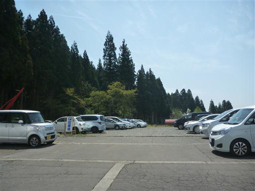
自宅近くではとっくに散ってしまった桜だが、この辺りではまだ咲いている。
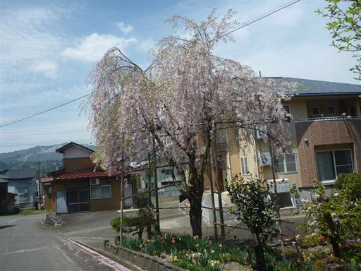
鳥坂神社。ここが登山道の起点だ。
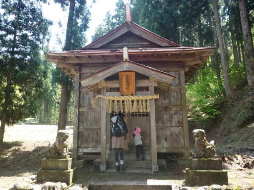
登山道は最初から急斜面が続く。
登りに城坂コース、下りに薬師尾根コースを歩こうと考えていたが、道を間違えてしまった。
すぐに間違いに気付いたが、時間が押しているため、このまま予定と逆コースを歩くことにする。
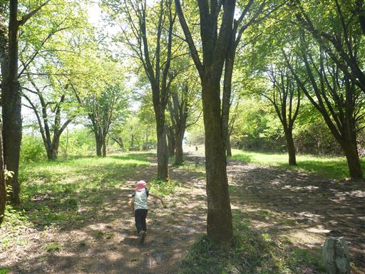
登山道の脇には等間隔で石造が並んでいる。
一体一体形は違うようだ。
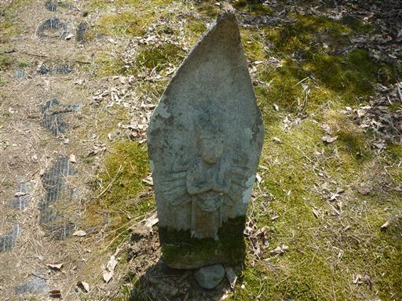
少し登ると展望が開けてくる。
まだまだ登り始めなのだが、12時になったので昼食タイムをとる。
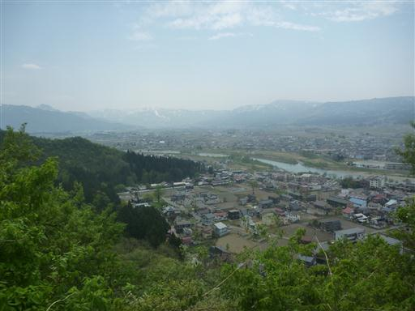
こちらのコースは段差の大きい階段が延々と続いている。
道はよく整備されているが、体力的には辛い登りだ。
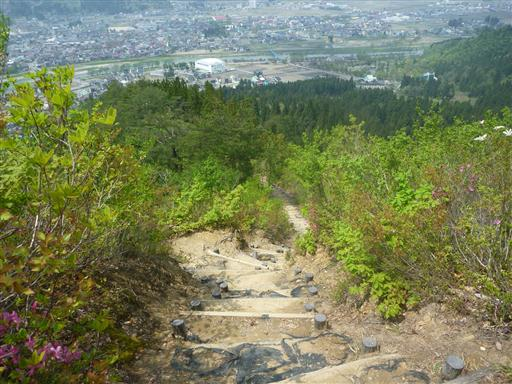
新緑とツツジが目を楽しませてくれる。
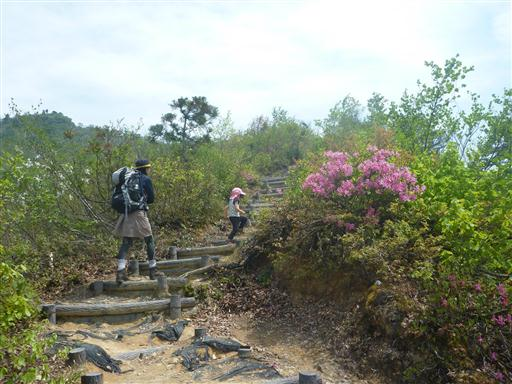
こちらはタムシバの花。コブシの花に似た大柄の花で、登山道の周囲を白に染めている。
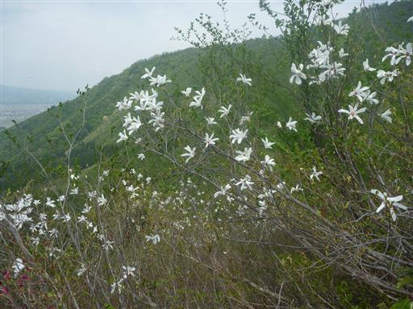
前方に坂戸山の山頂付近が見えているが、まだまだ遠い。
娘は平日であればお昼寝タイムであり、グズグズ言い始める。
長い車の移動でも疲れているようだ。
下りはキャリアに乗せてあげると約束し、励ましながら登っていく。
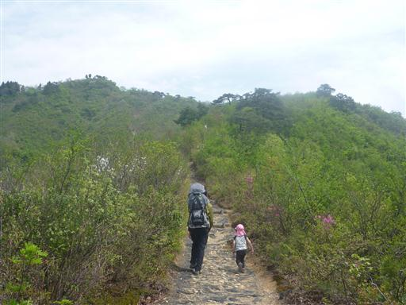
足元にイワカガミの花が咲いている。
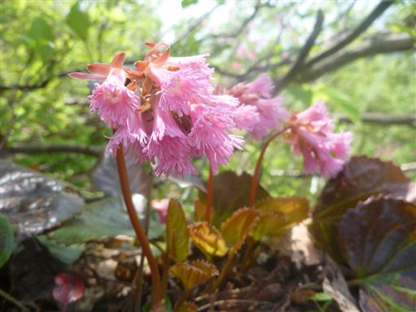
イワナシの花。

これは何の葉だろうか？
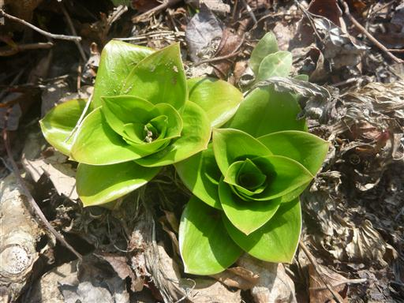
この尾根はどこまで歩いてもタムシバの花が咲いている。
今年はタムシバの当たり年らしい。
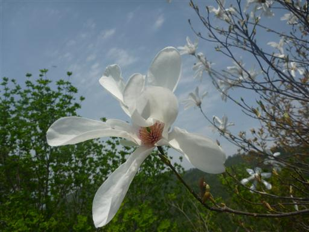
トカゲの数が多く、よくガサゴソいっている。
なかなかきれいなトカゲだ。
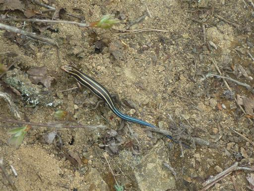
遠くに金城山が見えている。
坂戸山は金城山から延びる尾根の先にあり、金城山の子分のような関係だ。
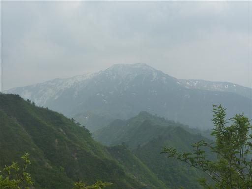
急な階段はまだまだ続く。
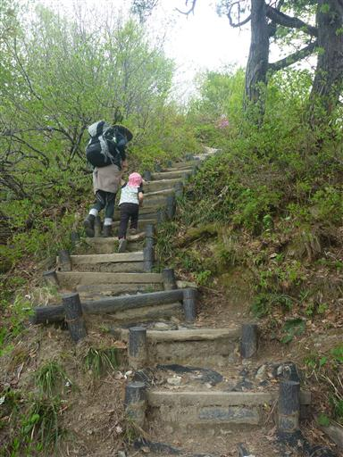
山頂直下は梯子のような階段を登っていく。
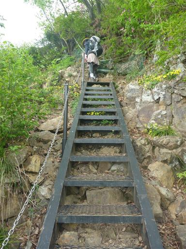
ミツバツチグリだろうか？岩場に黄色い花が群生している。
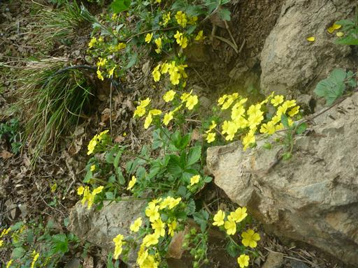
長い長い坂を登り終えて、ようやく坂戸山山頂にたどり着く。標高634m。
実際はそれほど長い坂ではないのだが、ぐずついた娘と一緒だとかなり長く感じる。
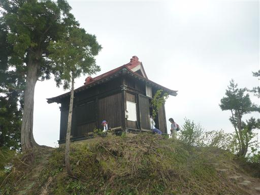
山頂にカタクリの花が咲いている。
カタクリを見に来たのに尾根コースには全く咲いておらず、ようやく出会うことができた。
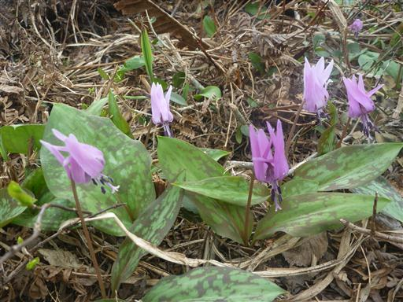
山頂の先に大城という場所があるため、そこまで足を延ばす。
大城近辺はカタクリの花がよく咲いているらしい。
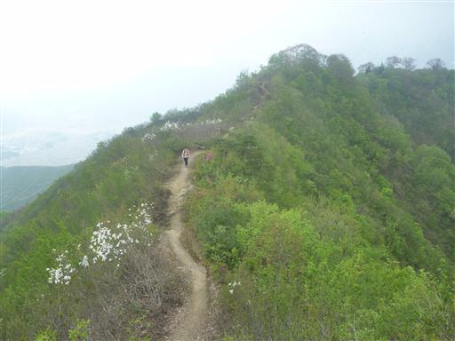
足元にイワウチワを発見。可愛らしい花だ。
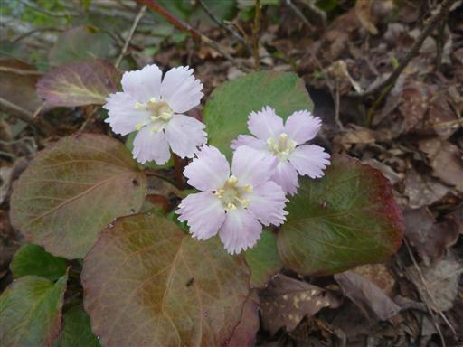
足元にカタクリの花が増えてきた。
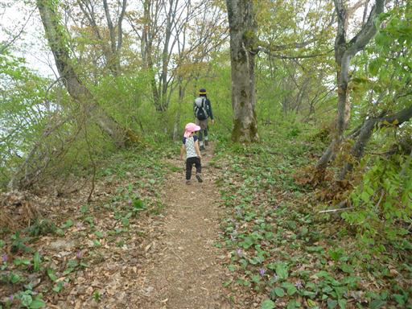
大城に到着。ここにはカタクリの大群落が広がっている。
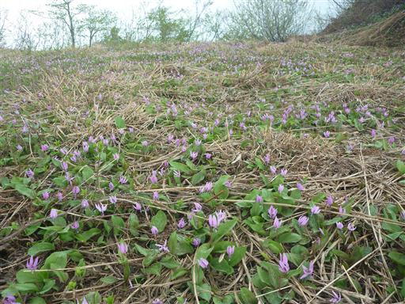
展望も素晴らしい場所のはずなのだが、雲が出てきてほとんど何も見えない。
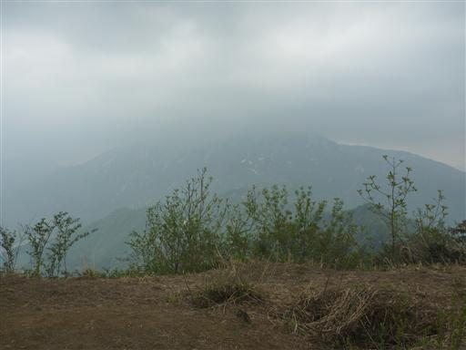
雲行きが怪しいので、坂戸山山頂に戻ったらすぐに下山することにする。
帰りは城坂コースを下山する。
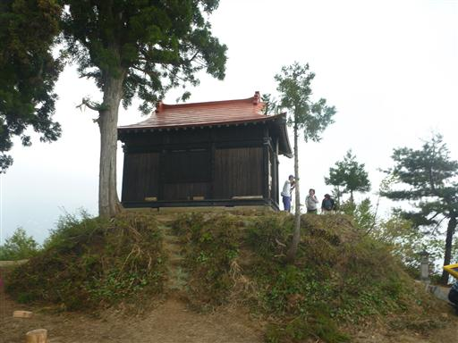
こちらの登山道はカタクリの花が豊富で、登山道周辺のあちらこちらに咲いている。
娘は久しぶりにキャリアに乗せてもらえてニコニコだ。
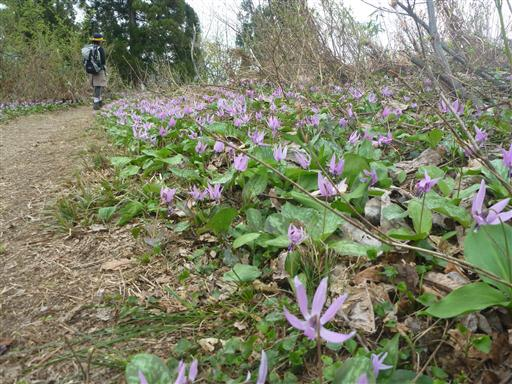
足元にショウジョウバカマの花が咲いている。
あまり好きな花ではないが見かけるのは久しぶりだ。
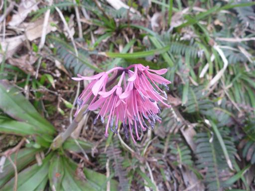
眼下に桃の木平が見えてきた。
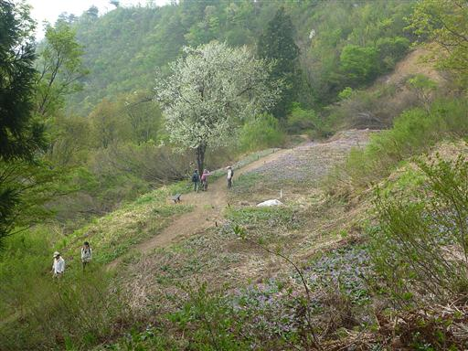
桃の木平に到着。ここもカタクリの花の大群落だ。
坂戸山の中ではここの群落が一番素晴らしい。
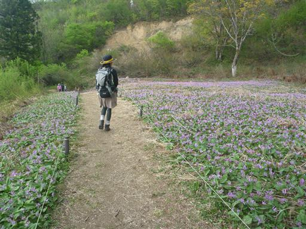
多雪地帯のため木は横に寝ている。高い木もあまり見当たらない。
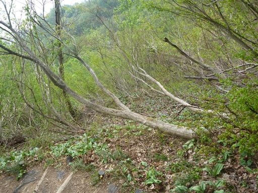
花を愛でながら階段を下って行く。
久しぶりに娘を背負って山を歩くが想像以上に重く、膝を壊しそうだ。
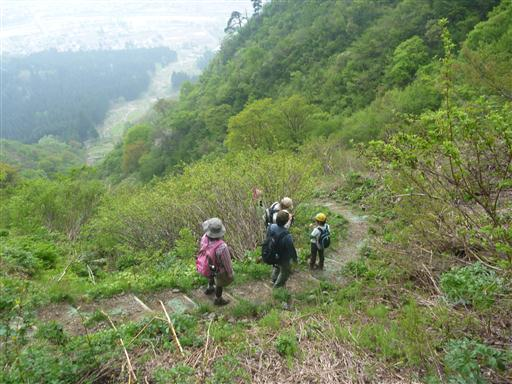
恐らくミチノクエンゴサク。小さな花だ。
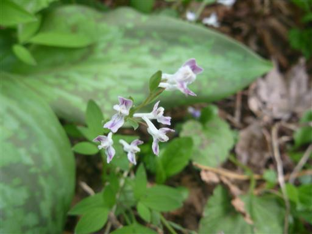
沢沿いはまだ僅かながら雪が残っている。
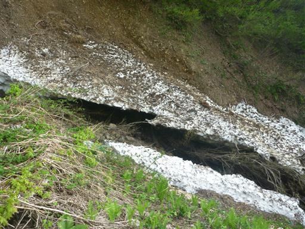
キクザキイチゲ。残念ながらあまりきれいな状態では咲いていない。
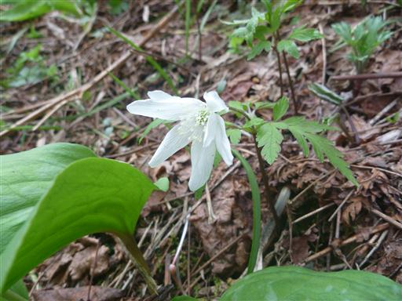
一本杉に到着。かなり大きな杉だ。
洞の部分はコンクリートのようなもので固められている。
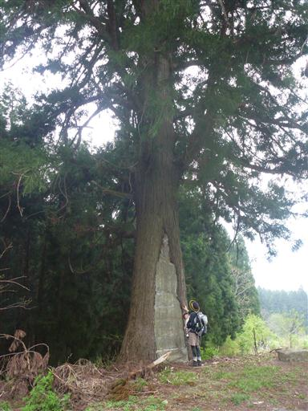
イカリソウ。花の形が錨に似ているため、こう名付けられた。
比較的有名な花だが、見かけるのは初めてだ。
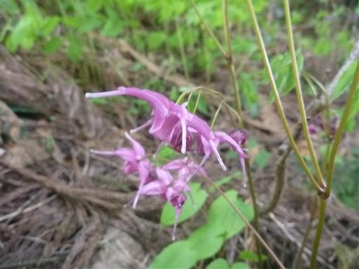
山の麓まで下りてくる。坂戸城跡の標石が立っている。
この辺りに屋敷があったらしいが、城の本丸は坂戸山の山頂にあった。
標高差は400m以上あり、さぞかし移動は大変だっただろう。
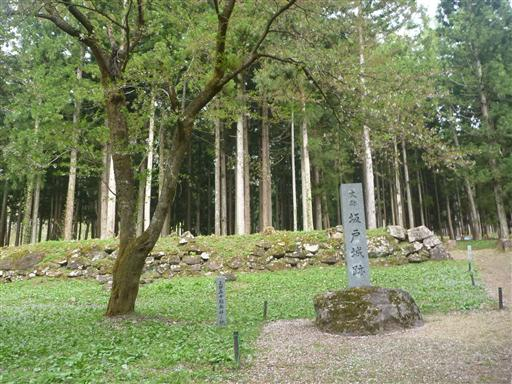
駐車場に戻ったのは15時で、時間はかなり中途半端。
観光をしている時間はないので、八海山泉ヴィレッジへ土産物を買いに行くことにする。
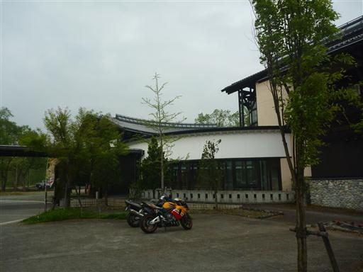
八海山がズラリと並ぶ。ここでは地ビールを購入。
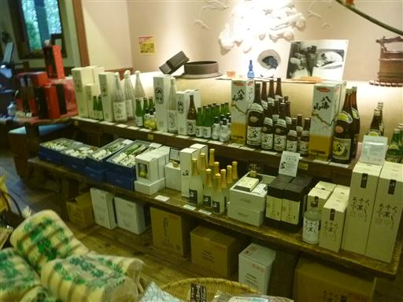
買物を済ませたら本日の宿に移動する。
直前の予約だったが宿はそこそこ賑わっていた。
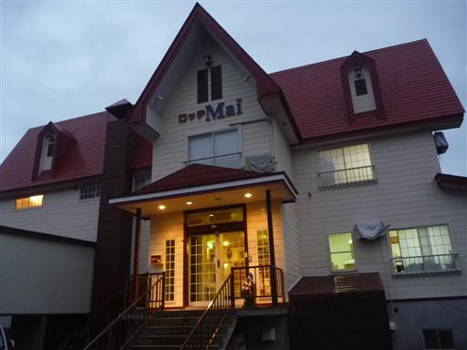